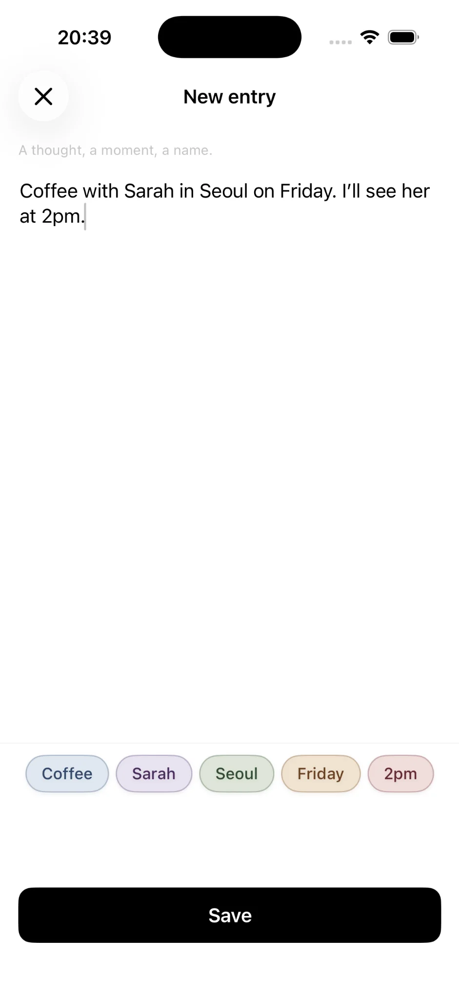
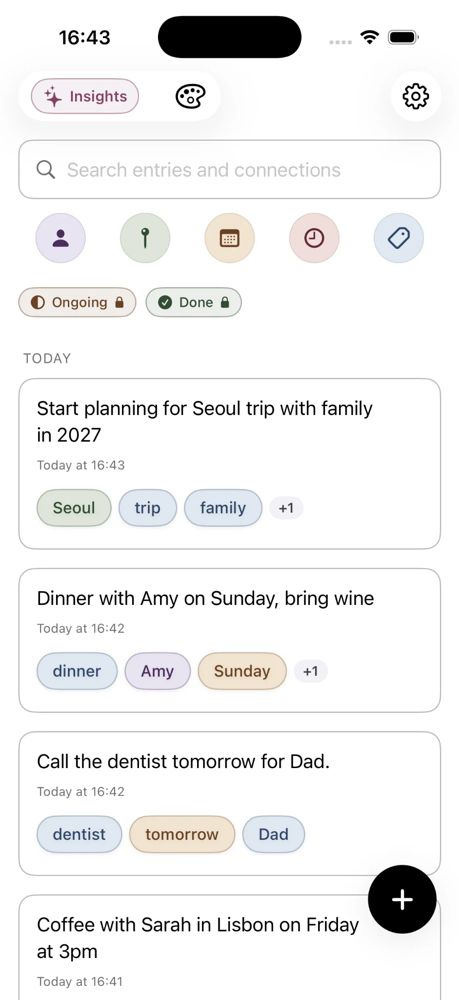
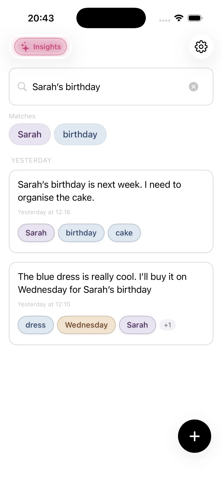

01
평범한 노트로 시작하기
있었던 일을 그대로 쓰세요.
시작하기 전에 선택해야 할 폴더도, 관리해야 할 태그 시스템도 없습니다.
말하듯이 생각을 입력하세요. “금요일에 서울에서 사라와 커피. 오후 2시에 만날 거예요.” 글을 쓰는 동안 Onuri가 유용한 맥락을 인식해 색깔 있는 라벨로 보여 줍니다.
커피사라서울금요일

Onuri 작동 방식
Onuri는 평범한 글을 연결된 맥락으로 바꿔 주는 iPhone용 비공개 노트 앱입니다. 자신의 말로 노트를 쓰면 Onuri가 유용한 사람, 장소, 날짜, 시간, 주제를 인식하고, 이후 검색과 연결을 통해 관련 노트를 찾을 수 있습니다. 폴더나 수동 태그는 필요 없습니다.
 컴퓨터에서 보고 계신가요?iPhone으로 스캔
컴퓨터에서 보고 계신가요?iPhone으로 스캔무료 플랜에서도 무제한 노트 · iCloud 동기화 · 앱 내 광고, 분석 SDK, 추적 없음.
평범한 노트로 시작하기
시작하기 전에 선택해야 할 폴더도, 관리해야 할 태그 시스템도 없습니다.
말하듯이 생각을 입력하세요. “금요일에 서울에서 사라와 커피. 오후 2시에 만날 거예요.” 글을 쓰는 동안 Onuri가 유용한 맥락을 인식해 색깔 있는 라벨로 보여 줍니다.

자동 맥락
저장하면 노트가 인식된 맥락과 함께 개인 피드에 추가됩니다.
나중에 사라, 생일, 어떤 장소나 아이디어가 다시 등장하면, Onuri는 그 공통된 맥락을 활용해 관련 항목을 찾아 보여 줄 수 있습니다. 모든 생각을 어디에 둘지 고민하는 대신 계속 자연스럽게 쓰기만 하면 됩니다.

연결 따라가기
사람, 장소, 날짜, 주제 하나가 노트를 탐색하는 경로가 될 수 있습니다.
예를 들어 사라로 필터링하면 Onuri는 케이크, 생일, 커피, 서울, 금요일, 수요일 같은 연결된 맥락을 보여 줍니다. 폴더 트리를 탐색하는 대신, 글 속에 이미 존재하는 관계를 따라 이동하게 됩니다.

기억나는 것으로 검색하기
기억나는 단어나 아이디어를 검색하면 연결된 노트가 결과를 좁혀 줍니다.
“사라의 생일”을 검색하면, 주변의 정확한 표현이 다르더라도 그 아이디어들이 겹치는 노트를 다시 찾아 줍니다. 검색은 직접 쓴 텍스트와 Onuri가 그 텍스트에서 인식한 맥락을 함께 활용합니다.

Premium 인사이트
기록이 쌓일수록 Premium은 사용자의 항목 전체를 살펴 반복되는 패턴을 찾을 수 있습니다.
인사이트는 반복되는 사람, 장소, 주제, 연결, 시간 패턴, 의미 클러스터를 보여 줄 수 있습니다. Premium에서는 진행 중·완료 상태, 다섯 가지 추가 테마, 그에 맞는 앱 아이콘도 추가됩니다. 목표는 더 많이 정리하게 만드는 것이 아니라, 이미 작성한 글 속에서 계속 등장하는 것을 알아차리도록 돕는 것입니다.

차이점
Onuri는 하나의 단순한 순환을 중심으로 설계되었습니다. 먼저 기록하고, 맥락을 자동으로 인식한 다음, 노트 사이의 관계를 통해 지난 노트를 다시 발견하는 것입니다.
설계 단계부터 비공개
Onuri 앱은 광고, 추적, 서드파티 분석 SDK를 사용하지 않습니다. 인식과 인사이트는 기기 내에서 실행되도록 설계되었으며, 노트는 개인 iCloud 계정을 통해 지원되는 Apple 기기 간에 동기화할 수 있습니다.
글은 언제든 가져갈 수 있습니다
Onuri는 TXT 및 CSV 내보내기를 지원하므로, 노트가 앱 안에 갇히지 않도록 했습니다. 무료 플랜에는 무제한 노트와 핵심 자동 연결 기능이 포함됩니다.
이것이 Onuri의 핵심 아이디어입니다. 오늘은 자연스럽게 쓰고, 어제의 노트는 내일 더 쉽게 다시 발견할 수 있도록.
컴퓨터에서 보고 계신가요?iPhone으로 스캔